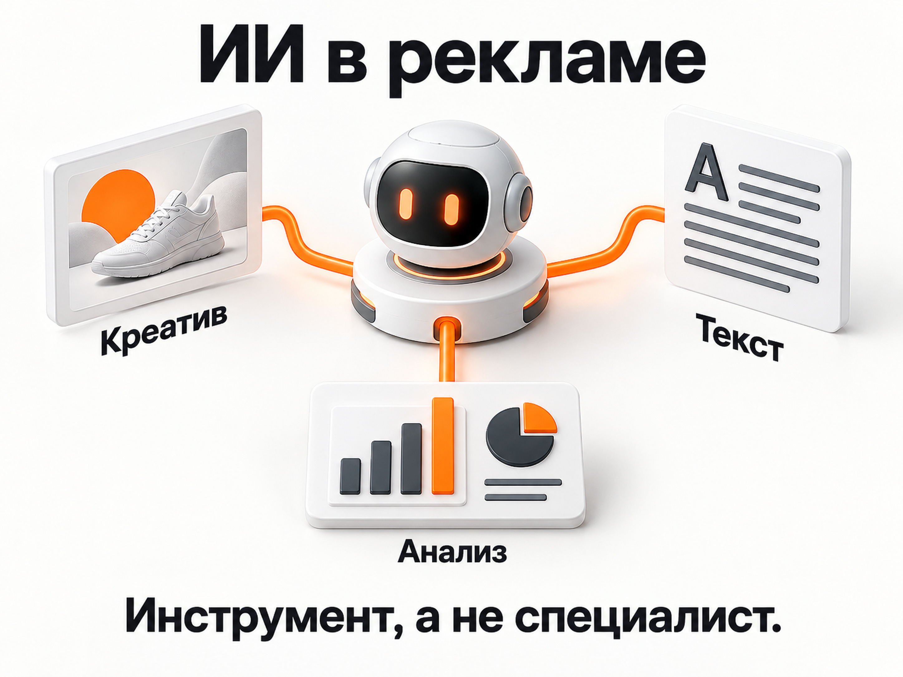
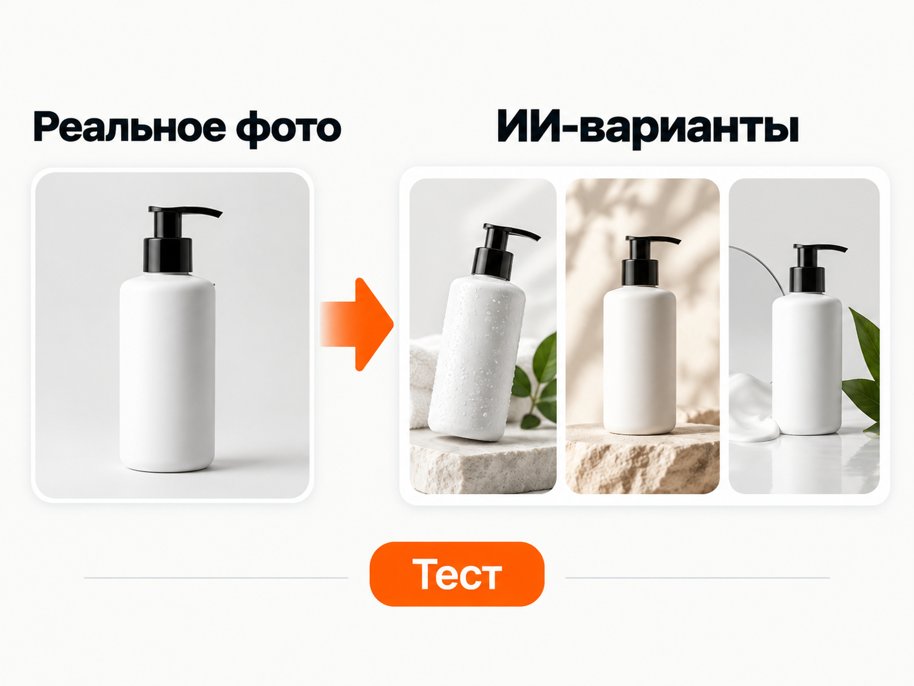
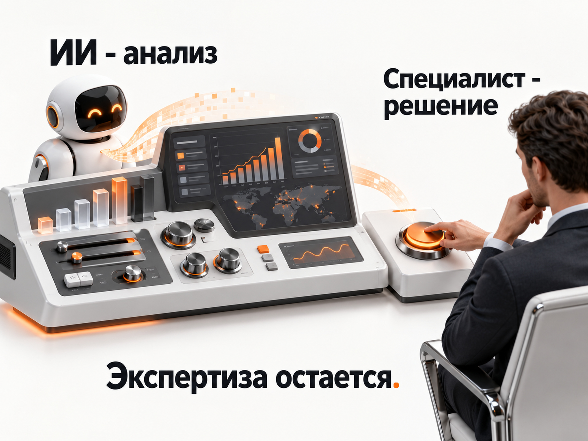

Блог о платном трафике
Нейросеть для рекламы и Яндекс Директа: что ИИ реально умеет
Нейросеть для рекламы в 2026 году - действительно полезный инструмент. С ее помощью можно создавать рекламные креативы, искать варианты заголовков и офферов, анализировать статистику, работать с семантикой, писать скрипты и автоматизировать часть рутинных задач.
Но есть принципиальная разница между «нейросеть помогает работать с рекламой» и «нейросеть самостоятельно ведет рекламу вместо специалиста».
Первое уже хорошо работает. Второе пока больше относится к маркетингу сервисов, которые пытаются продать автоматизацию как полноценную замену директолога.
Я использую ИИ именно как инструмент ускорения работы. Решения о структуре кампаний, стратегии, качестве трафика, допустимой стоимости обращения и дальнейшей оптимизации все равно должен принимать человек, который понимает бизнес и Яндекс Директ.
Что нейросеть может делать в рекламе
| Задача | Чем помогает ИИ |
|---|---|
| Рекламные изображения | Создает новые креативы и варианты существующих фотографий |
| Тексты объявлений | Предлагает заголовки, тексты, офферы и формулировки |
| Сайт | Помогает найти слабые формулировки и подготовить другие варианты |
| Семантика | Группирует запросы, чистит массивы, помогает работать с частотностью |
| Статистика | Анализирует выгрузки и ищет закономерности |
| Гипотезы | Предлагает направления для дальнейшей проверки |
| Автоматизация | Пишет скрипты для контроля и обработки данных |
| Мониторинг | Может участвовать в системе проверки изменений рекламных кампаний |
При этом практически в каждом пункте остается одна и та же оговорка: нейросеть хорошо выполняет конкретную поставленную задачу, но сама постановка задачи и оценка результата требуют экспертизы.
ИИ уже встроен в Яндекс Директ
Для использования нейросетей даже необязательно подключать сторонний сервис.
В самом Яндекс Директе сейчас есть ИИ-редактор креативов. Он умеет генерировать изображения по описанию, редактировать загруженные изображения, менять их пропорции и создавать короткие видео на основе картинки. Инструмент доступен, в частности, в Мастере кампаний и при создании комбинаторных объявлений в ЕПК. Подробнее в справке Яндекса.
Тексты объявлений Директ тоже умеет генерировать с помощью нейросети на основе рекламируемой страницы и информации о бизнесе. Полученные варианты можно редактировать. Подробнее в справке Яндекса.
Отдельно появился ИИ-помощник. В Директе Про он уже умеет по обычному текстовому запросу строить отчет в Мастере отчетов и делать суммаризацию данных. В мобильном приложении он может провести пользователя через запуск кампании с Простым стартом, включая генерацию текста, изображений и лендинга. При этом сам Яндекс отдельно указывает, что возможности помощника пока ограничены. Подробнее в справке Яндекса.
То есть ИИ для Яндекс Директа уже существует непосредственно внутри рекламной системы. Но даже Яндекс пока не представляет его как полностью автономного специалиста, который способен самостоятельно принимать все решения по рекламе.

Нейросеть для создания баннеров для рекламы
Создание креативов - одна из задач, где нейросети сейчас особенно полезны.
Раньше для каждого нового теста нужно было искать фотографию, делать макет самостоятельно или отдавать задачу дизайнеру. Сейчас несколько визуальных гипотез можно получить значительно быстрее.
Особенно хорошо это работает, когда у бизнеса уже есть качественные исходные материалы.
Например, если рекламируется конкретный товар, интерьер, автомобиль, специалист или результат работы, я бы по возможности использовал реальную фотографию, а не просил нейросеть придумать объект с нуля.
Современные генераторы позволяют загрузить исходное фото и изменить фон, окружение, композицию или отдельные элементы. В ИИ-редакторе Директа можно загрузить существующий креатив и дать команду на точечное изменение, при этом редактор старается сохранить исходную композицию и стиль. Подробнее в справке Яндекса.
Аналогично работают современные универсальные генераторы изображений. Например, ChatGPT позволяет загрузить существующее изображение и редактировать его по текстовой инструкции. Подробнее в справке OpenAI.
Для рекламы это дает хороший сценарий:
реальное фото продукта → несколько визуальных концепций → разные рекламные креативы → тестирование в рекламе.
Так сохраняется связь с реальным товаром или бизнесом, но производство вариантов ускоряется в разы.
Для РСЯ это особенно удобно, поскольку нельзя заранее достоверно знать, какой именно визуальный подход окажется сильнее. Это определяется тестом.
Что такое РСЯ в Яндекс Директ и как она работает
Комбинаторные объявления в Яндекс Директе: что это и как настроить
Можно ли доверить нейросети тексты рекламы
Можно попросить нейросеть написать:
- варианты заголовков;
- тексты объявлений;
- офферы;
- преимущества;
- варианты первого экрана сайта;
- формулировки кнопок;
- идеи для разных сегментов аудитории.
Но брать первый полученный вариант и сразу запускать его я бы не стал.
Нейросеть не знает бизнес так, как его знает владелец или специалист, который ведет проект. Она может не понимать, какое преимущество действительно важно клиентам, какие обещания компания способна выполнить, почему покупатели выбирают именно этот продукт и какие формулировки уже проверялись раньше.
Она хорошо перерабатывает информацию и предлагает комбинации на основе большого объема существующих данных. Это полезно для расширения списка идей, но не означает, что каждая сгенерированная идея хорошая.
Я бы использовал нейросеть как дополнительного участника мозгового штурма: получить 10 вариантов, выбрать два действительно сильных, доработать и проверить рекламой.
То же самое относится к тексту сайта. ИИ может показать альтернативную формулировку оффера или переписать непонятный блок. Но решение «этот вариант лучше» принимается не потому, что так сказала нейросеть, а по смыслу и в идеале по результатам тестирования.
Нейросети и работа с ключевыми запросами
Здесь тоже есть полезные сценарии, но есть важное ограничение.
Сама языковая модель не знает актуальную частотность поисковых запросов только потому, что ее об этом спросили. Для реальных данных нужен Вордстат или другой актуальный источник.
У Яндекс Вордстата есть API для автоматического получения данных, включая статистику запросов. Подробнее в справке Яндекса.
Поэтому рабочая схема может выглядеть так:
Вордстат или API → реальные данные → нейросеть → кластеризация, очистка и анализ.
Можно, например, выгрузить несколько тысяч запросов и попросить ИИ разделить их по интенту, найти мусор, объединить близкие формулировки или подготовить структуру рекламных групп.
Можно пойти дальше и с помощью той же нейросети написать скрипт, который самостоятельно обращается к API и обрабатывает полученные данные.
Вот здесь ИИ действительно сильно ускоряет работу. Но данные должны откуда-то поступить. Просить нейросеть просто «назвать частотность» без доступа к актуальному источнику - плохая идея.

Анализ рекламных кампаний с помощью ИИ
Еще одно перспективное направление - анализ статистики.
Можно выгрузить данные из Яндекс Директа в CSV или Excel и передать их нейросети. Современные модели умеют анализировать таблицы, искать изменения, выбросы и закономерности, строить расчеты и помогать формулировать гипотезы. Подробнее в OpenAI Academy.
Сам Яндекс движется в ту же сторону: ИИ-помощник в Директе уже умеет по текстовому запросу собирать нужный отчет и суммаризировать показатели. Подробнее в справке Яндекса.
Через API возможности еще шире. API Яндекс Директа позволяет внешним приложениям получать статистику и управлять объектами рекламных кампаний. Документация API Яндекс Директа.
Технически можно построить связку:
Яндекс Директ → API → собственный скрипт → нейросеть → анализ и рекомендации.
Но здесь снова появляется главный вопрос: что именно считать проблемой?
Рост CPA на 20% может быть проблемой, а может быть нормальным колебанием. Площадка с дорогими кликами может приносить лучшие продажи. Кампания с низким CTR может быть прибыльной. Более дешевый лид может оказаться хуже по качеству.
Нейросеть способна найти изменение. Чтобы правильно объяснить его значение, нужен контекст.
Аудит Яндекс Директ: что проверить и как найти проблемы в рекламе
ИИ хорошо подходит для автоматизации контроля
Еще один сценарий, который я считаю полезным, - создание собственных небольших инструментов.
Например, нейросеть может помочь написать скрипт, который:
- отслеживает изменения настроек;
- проверяет состояние кампаний;
- контролирует бюджеты;
- сравнивает показатели с предыдущими периодами;
- сообщает об аномалиях;
- формирует регулярный отчет.
У Яндекс Директ API есть отдельные методы для проверки изменений в кампаниях, группах и объявлениях. Документация API Яндекс Директа.
То есть здесь нейросеть не «ведет Директ». Она помогает специалисту построить собственную систему контроля и быстрее заметить то, что требует внимания.
На мой взгляд, это намного полезнее идеи полностью отдать рекламный кабинет некой универсальной нейросети.
Почему «ИИ-директолог за несколько тысяч рублей» не равен специалисту
На рынке появляются сервисы, которые обещают практически заменить директолога за небольшую ежемесячную плату.
Обычно в описании перечисляются автоматическая минусация запросов, анализ площадок, рекомендации, генерация объявлений и другие подобные функции.
Проблема в том, что значительная часть такой автоматизации существовала и до нынешнего бума генеративного ИИ.
Сам факт, что сервис автоматически нашел площадку с определенными показателями или предложил минус-фразу, еще не означает, что он правильно понимает рекламную стратегию.
Сложная часть работы начинается дальше.
Стоит ли вообще минусовать эту площадку? Достаточно ли по ней данных? Нужно ли менять стратегию? Проблема находится в рекламе или на сайте? Почему выросла стоимость продажи? Нужно ли разделить кампании или, наоборот, объединить данные? Какое качество у заявок? Что сейчас происходит с отделом продаж?
На такие вопросы нельзя нормально отвечать по одному показателю.
Хороший специалист опирается не только на справку Яндекса. Есть опыт десятков проектов, собственные тесты, неудачные эксперименты, текущие изменения алгоритмов, наблюдения других специалистов и профессиональные обсуждения, которые вообще могут нигде публично не публиковаться.
Именно из этого постепенно формируется понимание, когда стандартную рекомендацию лучше применить, а когда сделать наоборот.
Нейросеть такого практического контекста конкретного специалиста автоматически не получает.

Заменит ли ИИ директолога
Я не думаю, что корректно ставить вопрос именно так.
Нейросети уже забрали и продолжат забирать большой объем технической и рутинной работы.
Сделать пять вариантов креатива, переписать заголовок, обработать выгрузку, собрать отчет, написать скрипт, найти аномалию - все это теперь можно делать быстрее.
В результате хороший специалист с ИИ становится продуктивнее.
Но основная ценность директолога находится не в ручном написании 50 заголовков и не в механической минусации запросов.
Она в другом:
- понять задачу бизнеса;
- выбрать правильную рекламную модель;
- определить, какие данные действительно важны;
- увидеть проблему;
- сформулировать гипотезу;
- решить, что менять, а что лучше не трогать;
- оценить качество заявок и продаж;
- связать работу рекламы с экономикой проекта.
Чем больше Яндекс автоматизирует сам рекламный кабинет, тем заметнее становится именно эта часть работы.
Как я бы использовал нейросеть для рекламы бизнеса
Для владельца бизнеса оптимальная схема сейчас выглядит достаточно просто.
Использовать ИИ там, где он ускоряет производство и обработку информации: креативы, тексты, данные, отчеты, автоматизация.
Использовать реальные фотографии товара, услуги или бизнеса, когда они есть, а нейросеть применять для создания дополнительных вариантов и адаптаций.
Не воспринимать сгенерированный текст, изображение или рекомендацию как автоматически правильный результат.
И не путать автоматизацию отдельных операций с полноценным управлением рекламой.
Нейросеть для рекламы - это уже очень сильный инструмент. Но результат по-прежнему зависит от человека, который понимает, какую задачу ей поставить и что делать с полученным ответом.